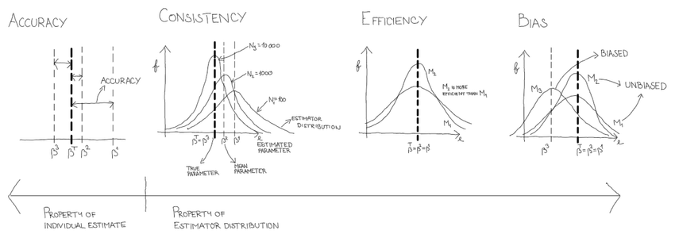
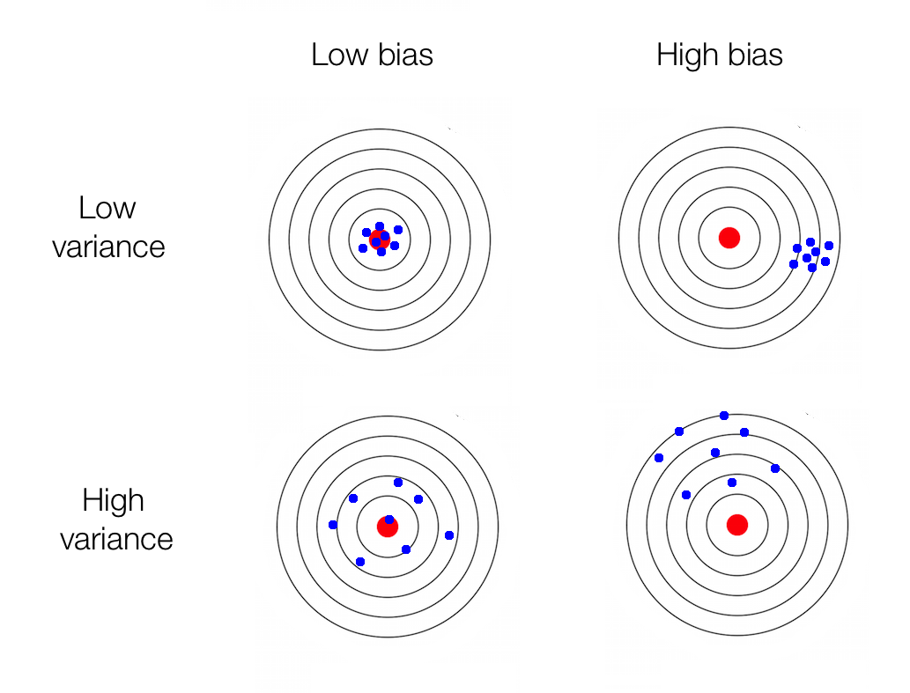
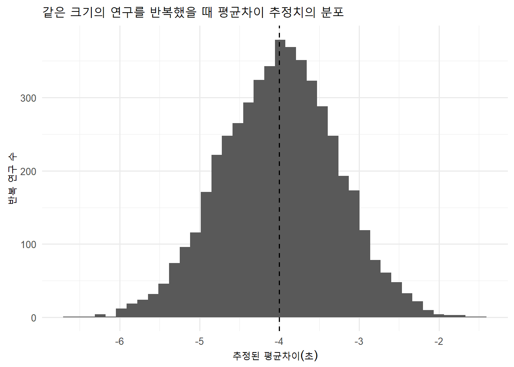
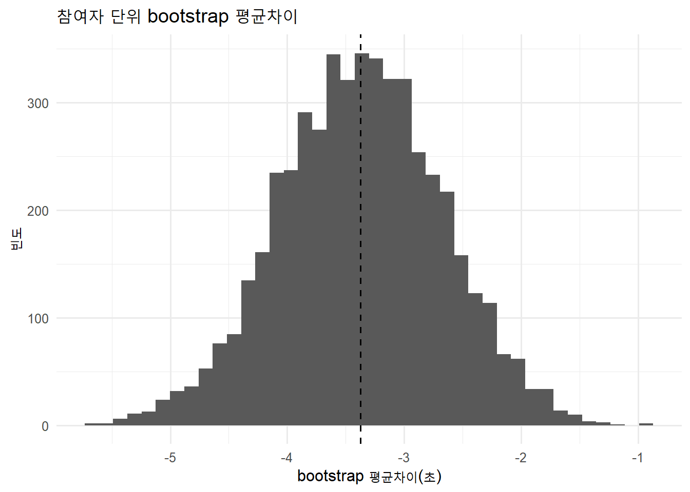
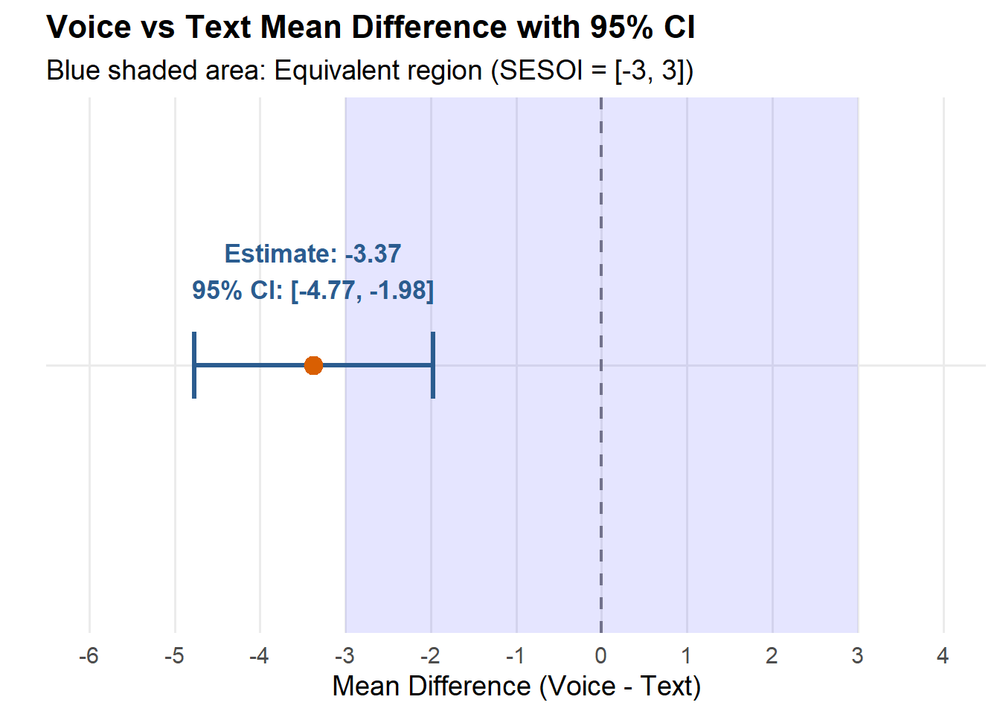
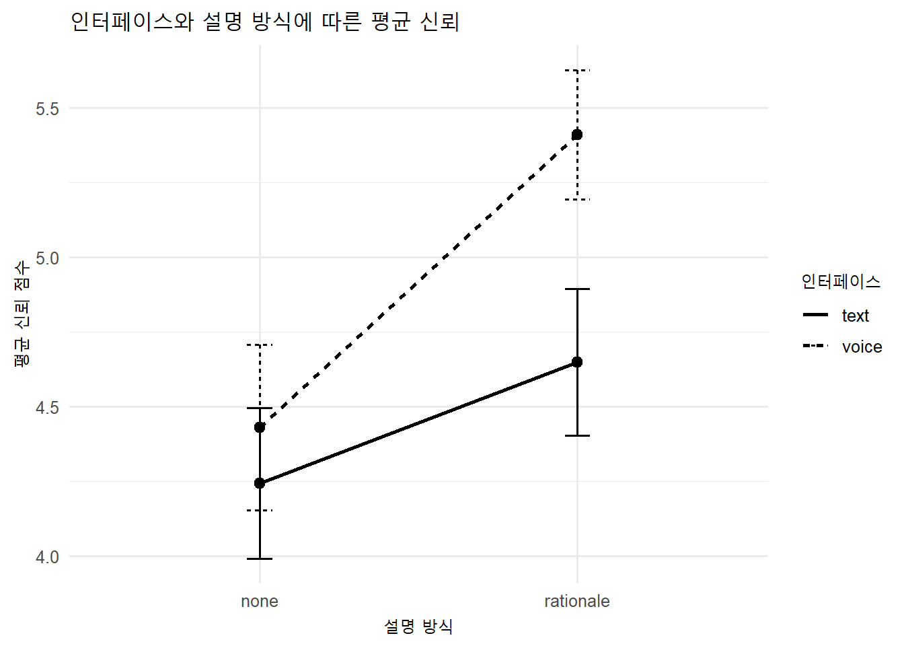
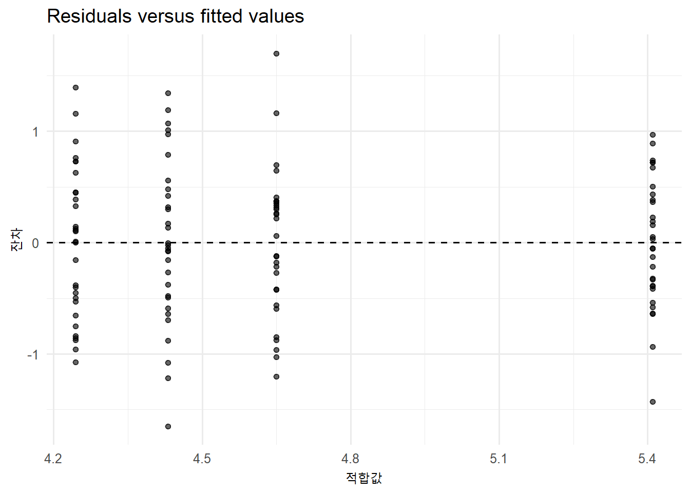
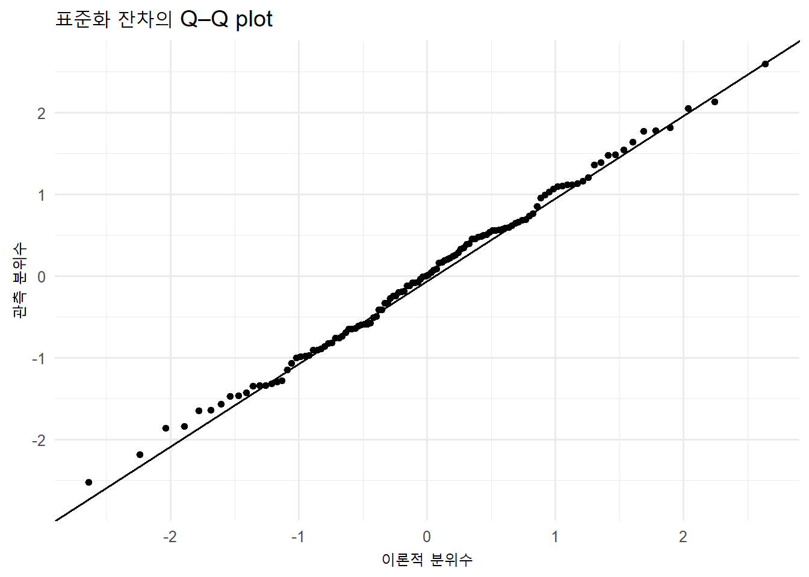
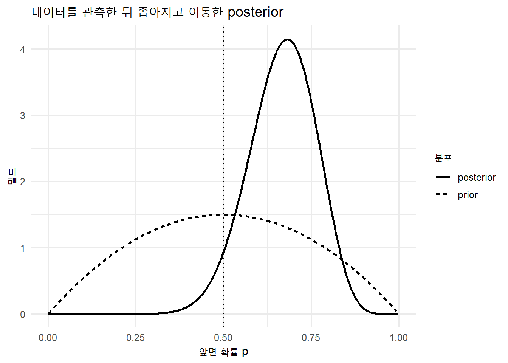

flowchart LR
A["Research Question<br>무엇을 알고 싶은가?"] --> B["Population & Estimand<br>누구의 어떤 효과인가?"]
B --> C["Design & Sample<br>표집·할당·측정"]
C --> D["Estimate<br>효과의 크기와 방향"]
D --> E["Uncertainty<br>SE·CI·sampling distribution"]
E --> F["Audit<br>가정·다중성·민감도"]
F --> G["Claim<br>가능한 일반화와 한계"]
통계적 추론
추론 통계, ANOVA, 실험 디자인
9주차 학습목표
Note
이번 주 학습을 마치면 다음을 할 수 있어야 합니다.
- 모집단, 표집틀, 표본, 모수, 통계량, 추정대상(estimand)을 구분한다.
- 점추정치, 표준오차, 신뢰구간, 효과크기, p-value가 서로 다른 질문에 답한다는 점을 설명한다.
- 반복표집, bootstrap, permutation을 통해 표집불확실성을 이해한다.
- 95% 신뢰구간과 p-value를 빈도주의 관점에서 정확하게 해석한다.
- 통계적 유의성과 실질적 중요성을 구분하고 최소 관심 효과와 비교한다.
- 제1종·제2종 오류, 검정력, 정밀도를 연구설계와 연결한다.
- ANOVA를 별개의 기술이 아니라 선형모형과 대비(contrast)의 한 형태로 이해한다.
- 주효과, 상호작용, 집단 간·집단 내·혼합 설계를 구분한다.
- 반복측정 자료에서 참여자 내 의존성을 반영하는 분석을 선택한다.
- 빈도주의 신뢰구간과 베이지안 credible interval의 차이를 설명한다.
- ChatGPT와 같은 GenAI를 유의성 판정기가 아니라 추론과 주장 범위의 reviewer로 활용한다.
오늘의 핵심 질문
이 표본에서 무엇을 추정하고 있으며, 그 불확실성과 연구설계를 고려할 때 모집단에 대해 어디까지 말할 수 있을까?
Important
통계적 추론의 목적은 p-value를 0.05 아래로 만드는 것이 아닙니다. 관심 효과의 크기와 방향을 추정하고, 표본과 모형이 남기는 불확실성을 정직하게 표현하는 것입니다.
관측된 표본에 없는 것은 무엇인가?
제2차 세계대전의 손상된 전투기 사례는 추론의 출발점을 잘 보여 줍니다. 귀환한 전투기의 손상만 보면 날개와 꼬리에 장갑을 더하고 싶어집니다. 그러나 돌아오지 못한 전투기가 표본에서 빠져 있다는 점을 고려하면, 오히려 귀환기에서 손상이 적었던 핵심 부위가 치명적이었을 수 있습니다.
분석 전에 누가 관측되었고, 누가 관측되지 않았으며, 어떤 과정이 표본을 만들었는지를 먼저 질문합니다. 큰 표본도 선택 편향을 자동으로 해결하지 않습니다.
이번 주의 GenAI 활용 방식
Attempt → Ask → Test → Audit → Explain
| 단계 | 학생이 먼저 할 일 | GenAI에 맡길 수 있는 일 |
|---|---|---|
| Attempt | 모집단, estimand, 설계, 예상 방향을 직접 정의한다. | 아직 사용하지 않는다. |
| Ask | 자신의 분석계획과 코드 초안을 제공한다. | 누락된 가정과 대안 분석을 질문하게 한다. |
| Test | R에서 추정치·CI·진단을 재현한다. | 출력값을 대신 만들어 달라고 하지 않는다. |
| Audit | 분석단위, 반복측정, 다중성, 실질적 기준을 점검한다. | reviewer처럼 과도한 결론을 찾게 한다. |
| Explain | 효과, 불확실성, 한계가 포함된 결과 문장을 작성한다. | p-value 중심 문장을 추정 중심 문장으로 비판하게 한다. |
추론을 부탁하는 대신 추론 구조를 검토받기
나는 같은 참여자가 text와 voice 인터페이스를 모두 경험한 HCI 연구를 분석한다.
관심 추정대상은 모집단의 평균적인 within-person 차이인
completion_time(voice) - completion_time(text)이다.
내 분석계획과 R 코드를 검토하라.
1. 관측단위와 독립적인 표집단위를 구분하라.
2. estimand와 계산한 통계량이 일치하는지 확인하라.
3. 신뢰구간, p-value, 효과크기가 각각 답하는 질문을 분리하라.
4. 최소 관심 효과가 ±3초일 때 실질적 해석을 비판하라.
5. 결과 문장에서 인과적·모집단적 과장을 찾아라.
6. 완성된 결론을 대신 쓰지 말고 먼저 진단 질문을 제시하라.
GenAI에 연구자료를 직접 올리지 않기
IRB 자료, 사용자 식별자, 비공개 로그를 공개형 GenAI에 입력하지 않습니다. 비식별 합성자료, 변수 정의, 집계표, 모형식, 진단 출력만으로 분석 검토를 받습니다.
준비: 공통 HCI 반복측정 자료
library(tidyverse)
theme_set(theme_minimal(base_size = 12))연구 시나리오
- 96명의 참여자
- 참여자 간 요인: 디지털 경험
novice,experienced - 참여자 내 요인: 인터페이스
text,voice - 조건 순서는 균형화:
text_first,voice_first - 결과변수: 과업완료시간
- 한 행: 한 참여자의 한 인터페이스 시행
set.seed(2026)
participants <- tibble(
participant_id = sprintf("P%03d", 1:96),
expertise = factor(
rep(c("novice", "experienced"), each = 48),
levels = c("novice", "experienced")
),
sequence = factor(
rep(
rep(c("text_first", "voice_first"), each = 24),
times = 2
),
levels = c("text_first", "voice_first")
),
participant_intercept = rnorm(96, mean = 0, sd = 6)
)
hci_trials <- participants |>
crossing(
interface = factor(
c("text", "voice"),
levels = c("text", "voice")
)
) |>
mutate(
period = case_when(
sequence == "text_first" & interface == "text" ~ 1L,
sequence == "text_first" & interface == "voice" ~ 2L,
sequence == "voice_first" & interface == "voice" ~ 1L,
TRUE ~ 2L
),
completion_time =
58 + participant_intercept -
4 * (expertise == "experienced") -
6 * (interface == "voice") +
4 * (expertise == "experienced" & interface == "voice") -
2 * (period == 2L) +
rnorm(n(), mean = 0, sd = 5),
completion_time = round(completion_time, 1)
) |>
select(
participant_id,
expertise,
sequence,
period,
interface,
completion_time
)glimpse(hci_trials)Rows: 192
Columns: 6
$ participant_id <chr> "P001", "P001", "P002", "P002", "P003", "P003", "P004"…
$ expertise <fct> novice, novice, novice, novice, novice, novice, novice…
$ sequence <fct> text_first, text_first, text_first, text_first, text_f…
$ period <int> 1, 2, 1, 2, 1, 2, 1, 2, 1, 2, 1, 2, 1, 2, 1, 2, 1, 2, …
$ interface <fct> text, voice, text, voice, text, voice, text, voice, te…
$ completion_time <dbl> 56.3, 50.7, 46.1, 45.4, 64.9, 48.4, 56.4, 43.9, 59.0, …hci_trials |>
summarise(
rows = n(),
participants = n_distinct(participant_id),
observations_per_participant = n() / n_distinct(participant_id)
)# A tibble: 1 × 3
rows participants observations_per_participant
<int> <int> <dbl>
1 192 96 2
Important
192개 행은 192명의 독립 표본이 아닙니다. 96명이 각각 두 번 측정되었습니다. 반복측정 구조를 무시하면 표준오차와 p-value가 잘못될 수 있습니다.
1. 추론의 출발점: 모집단과 estimand
먼저 무엇을 추정하는지 한 문장으로 쓰기
이번 연구의 예시 estimand는 다음과 같습니다.
목표 모집단에서 동일한 사람이 voice와 text 인터페이스를 사용할 때 나타나는 평균 과업완료시간 차이, \(E(Y_{voice}-Y_{text})\).
다음은 모두 다른 estimand입니다.
- voice와 text 조건의 관측 행 평균 차이
- 참여자별 차이의 평균
- novice 집단의 평균 차이
- experienced 집단의 평균 차이
- 중앙값 차이
- 60초 이내 완료확률 차이
분석법을 고르기 전에 estimand를 고릅니다.
Population, sampling frame, sample
| 개념 | 이번 사례의 예 |
|---|---|
| Target population | 연구자가 일반화하고 싶은 인터페이스 사용자 |
| Sampling frame | 실제 모집 공고가 도달한 학생·지역사회 패널 등 |
| Sample | 분석에 포함된 96명 |
| Parameter | 모집단의 평균 within-person 차이 |
| Statistic | 표본 96명의 평균 within-person 차이 |
Warning
무작위 할당은 조건 간 인과비교를 돕지만, 편의표집을 확률표집으로 바꾸지는 않습니다. 할당의 타당성과 모집단 일반화는 서로 다른 문제입니다.
좋은 추정량을 평가하는 여러 기준
| 기준 | 질문 | 주의점 |
|---|---|---|
| Bias | 반복표집에서 평균적으로 참값을 맞히는가? | 무편향성만으로 좋은 추정량이 보장되지는 않음 |
| Variance / precision | 표본이 바뀔 때 얼마나 흔들리는가? | 정밀해도 체계적으로 틀릴 수 있음 |
| Mean squared error | bias와 variance를 함께 고려하면 어떤가? | 작은 bias를 허용해 큰 variance를 줄일 수도 있음 |
| Consistency | 표본크기가 커질수록 참값에 가까워지는가? | 큰 표본에서도 측정·선택 편향은 남을 수 있음 |
| Robustness | 극단값이나 모형 위반에 얼마나 민감한가? | 모든 상황에서 최적인 추정량은 없음 |
추정량은 “무편향인가?” 하나로 끝나지 않습니다. 연구목적과 손실, 자료의 구조에 맞춰 bias–variance–robustness를 함께 봅니다.


Source: http://www.gtmath.com/2018/04/parameter-estimation-part-1-reader.html
2. 추정 우선: effect first
참여자별 차이를 만들기
paired_differences <- hci_trials |>
select(participant_id, expertise, interface, completion_time) |>
pivot_wider(
names_from = interface,
values_from = completion_time
) |>
mutate(
difference_voice_minus_text = voice - text
)
paired_differences |>
select(participant_id, expertise, text, voice, difference_voice_minus_text) |>
slice_head(n = 8)# A tibble: 8 × 5
participant_id expertise text voice difference_voice_minus_text
<chr> <fct> <dbl> <dbl> <dbl>
1 P001 novice 56.3 50.7 -5.60
2 P002 novice 46.1 45.4 -0.700
3 P003 novice 64.9 48.4 -16.5
4 P004 novice 56.4 43.9 -12.5
5 P005 novice 59 48.8 -10.2
6 P006 novice 35.1 42.3 7.20
7 P007 novice 47.7 40.3 -7.40
8 P008 novice 44.5 37.9 -6.6 음수 차이는 voice 조건에서 시간이 더 짧았음을 의미합니다.
paired_summary <- paired_differences |>
summarise(
n_participants = n(),
estimate = mean(difference_voice_minus_text),
sd_difference = sd(difference_voice_minus_text),
standard_error = sd_difference / sqrt(n_participants)
)
paired_summary# A tibble: 1 × 4
n_participants estimate sd_difference standard_error
<int> <dbl> <dbl> <dbl>
1 96 -3.37 6.89 0.703점추정치, 표준편차, 표준오차
- 점추정치: 표본에서 관측한 평균 효과
- 차이점수의 표준편차: 참여자별 효과가 얼마나 다른가?
- 표준오차: 같은 연구를 반복할 때 평균 효과 추정치가 얼마나 흔들리는가?
표준편차와 표준오차는 같은 것이 아닙니다.
반복표집으로 표준오차 보기
set.seed(2026)
sampling_distribution <- tibble(simulation = 1:5000) |>
mutate(
estimate = map_dbl(
simulation,
function(sim_id) {
mean(rnorm(96, mean = -4, sd = 7))
}
)
)
sampling_distribution |>
ggplot(aes(estimate)) +
geom_histogram(bins = 40) +
geom_vline(xintercept = -4, linetype = "dashed") +
labs(
title = "같은 크기의 연구를 반복했을 때 평균차이 추정치의 분포",
x = "추정된 평균차이(초)",
y = "반복 연구 수"
)
표본마다 점추정치는 달라집니다. 신뢰구간과 p-value는 이 표집변동을 모형화한 결과입니다.
3. 신뢰구간: 추정치가 얼마나 정밀한가?
모집단 표준편차를 모르는 평균 추론에서는 보통 t 임계값을 사용합니다.
\[ \bar d \pm t_{1-\alpha/2,\,n-1}\frac{s_d}{\sqrt n} \]
paired_ci <- paired_summary |>
mutate(
critical_t = qt(0.975, df = n_participants - 1),
lower = estimate - critical_t * standard_error,
upper = estimate + critical_t * standard_error
)
paired_ci# A tibble: 1 × 7
n_participants estimate sd_difference standard_error critical_t lower upper
<int> <dbl> <dbl> <dbl> <dbl> <dbl> <dbl>
1 96 -3.37 6.89 0.703 1.99 -4.77 -1.98paired_test <- t.test(
paired_differences$voice,
paired_differences$text,
paired = TRUE,
conf.level = 0.95
)
paired_test
Paired t-test
data: paired_differences$voice and paired_differences$text
t = -4.7931, df = 95, p-value = 6.058e-06
alternative hypothesis: true mean difference is not equal to 0
95 percent confidence interval:
-4.768464 -1.975286
sample estimates:
mean difference
-3.371875 95% 신뢰구간의 정확한 해석
빈도주의 95% 신뢰구간은 다음 절차적 성질을 가집니다.
동일한 표집과 분석 절차를 매우 많이 반복하면, 그렇게 만든 구간의 약 95%가 참 모수를 포함한다.
한 번 계산된 구간에 대해 “모수가 이 안에 있을 확률이 95%”라고 말하는 것은 빈도주의의 직접적인 해석이 아닙니다.
실질적 중요성과 비교하기
이 연구에서 ±3초보다 작은 차이는 실무적으로 중요하지 않다고 사전에 정했다고 합시다.
smallest_effect_of_interest <- 3
paired_ci |>
transmute(
estimate,
lower,
upper,
practical_interpretation = case_when(
upper < -smallest_effect_of_interest ~
"voice가 실질적으로 의미 있게 더 빠를 가능성과 일치",
lower > smallest_effect_of_interest ~
"text가 실질적으로 의미 있게 더 빠를 가능성과 일치",
lower >= -smallest_effect_of_interest &
upper <= smallest_effect_of_interest ~
"실질적으로 작은 차이와 일치",
TRUE ~
"중요한 효과와 작은 효과를 아직 구분하기 어려움"
)
)# A tibble: 1 × 4
estimate lower upper practical_interpretation
<dbl> <dbl> <dbl> <chr>
1 -3.37 -4.77 -1.98 중요한 효과와 작은 효과를 아직 구분하기 어려움
Important
“통계적으로 유의함”과 “실질적으로 중요한 효과”는 같은 판단이 아닙니다. 신뢰구간을 0뿐 아니라 최소 관심 효과와 함께 비교하세요.
표준화 효과크기
paired design의 간단한 표준화 효과크기 중 하나는 차이점수의 평균을 차이점수의 표준편차로 나눈 \(d_z\)입니다.
effect_size_dz <- paired_differences |>
summarise(
d_z = mean(difference_voice_minus_text) /
sd(difference_voice_minus_text)
)
effect_size_dz# A tibble: 1 × 1
d_z
<dbl>
1 -0.489효과크기는 맥락 없는 “작음·중간·큼” 분류보다, 원래 단위의 효과와 함께 해석하는 편이 좋습니다.
비표준화 효과 (Unstandardized Effect): 원래 측정한 원래의 단위(초, 점수, kg, 원 등)를 그대로 사용하는 실제 차이값
표준화 효과 (Standardized Effect): 원래 단위의 차이를 데이터의 변동성(표준편차, SD)으로 나누어 단위를 없앤 상대적인 지표
4. Bootstrap: 표집분포를 데이터에서 근사하기
paired design에서는 참여자 단위로 재표집해야 합니다. 시행 행을 따로 재표집하면 pairing이 깨집니다.
set.seed(2026)
bootstrap_estimates <- tibble(bootstrap_id = 1:5000) |>
mutate(
estimate = map_dbl(
bootstrap_id,
function(bootstrap_id) {
sampled_rows <- sample(
seq_len(nrow(paired_differences)),
replace = TRUE
)
mean(
paired_differences$difference_voice_minus_text[sampled_rows]
)
}
)
)
bootstrap_estimates |>
summarise(
lower = quantile(estimate, 0.025),
upper = quantile(estimate, 0.975)
)# A tibble: 1 × 2
lower upper
<dbl> <dbl>
1 -4.76 -2.02bootstrap_estimates |>
ggplot(aes(estimate)) +
geom_histogram(bins = 40) +
geom_vline(
xintercept = mean(paired_differences$difference_voice_minus_text),
linetype = "dashed"
) +
labs(
title = "참여자 단위 bootstrap 평균차이",
x = "bootstrap 평균차이(초)",
y = "빈도"
)
Warning
Bootstrap은 관측 표본이 목표 모집단을 잘 대표한다는 문제까지 해결하지 않습니다. 편향된 표집, 잘못된 측정, 누락된 조건은 재표집으로 고쳐지지 않습니다.
수식 기반 신뢰구간 vs 부트스트랩 신뢰구간 비교
| 구분 | 수식 기반 신뢰구간 (qt 사용) |
부트스트랩 신뢰구간 (sample 사용) |
|---|---|---|
| 기본 가정 | 데이터가 정규분포 및 t-분포를 따른다고 가정 (모수적) | 특정 확률분포를 가정하지 않음 (비모수적) |
| 계산 방식 | \(\text{Estimate} \pm t_{\text{critical}} \times \text{SE}\) 공식 이용 | 데이터를 복원추출(5,000회 등)하여 실제 분포를 형성 |
| 장점 | · 계산 속도가 매우 빠르고 간단함 · 표본이 정규성을 만족할 때 이론적으로 가장 정확함 |
· 데이터 분포 형태(치우침, 이상치)에 영향을 받지 않음 · 복잡한 통계량에도 유연하게 적용 가능 |
| 단점 | · 표본 수가 적고 데이터가 심하게 치우쳐 있으면 오차 발생 | · 시드(seed)에 따라 결과가 미세하게 달라질 수 있음 · 컴퓨팅 자원 및 연산 시간이 더 소요됨 |
| 적용 시점 | 표본 크기가 충분하거나 정규성이 보장될 때 | 데이터가 비대칭(Skewed)이거나 이상치가 존재할 때 |
5. 가설검정과 p-value
귀무모형 아래에서 관측 결과는 얼마나 극단적인가?
paired t-test의 귀무가설은 평균 차이가 0이라는 것입니다.
\[ H_0:\mu_d=0, \qquad H_1:\mu_d\ne 0 \]
검정통계량은 다음과 같습니다.
\[ t=\frac{\bar d-0}{s_d/\sqrt n} \]
p-value는 다음을 의미합니다.
귀무가설과 모형 가정이 참일 때, 현재 관측값과 같거나 더 극단적인 검정통계량을 얻을 확률
p-value는 다음이 아닙니다.
- 귀무가설이 참일 확률
- 결과가 우연 때문에 발생했을 확률
- 효과가 중요한 확률
- 다음 연구에서 재현될 확률
- 데이터가 조작되었을 확률
tibble(
estimate = unname(paired_test$estimate),
confidence_lower = paired_test$conf.int[1],
confidence_upper = paired_test$conf.int[2],
t_value = unname(paired_test$statistic),
degrees_of_freedom = unname(paired_test$parameter),
p_value = paired_test$p.value
)# A tibble: 1 × 6
estimate confidence_lower confidence_upper t_value degrees_of_freedom p_value
<dbl> <dbl> <dbl> <dbl> <dbl> <dbl>
1 -3.37 -4.77 -1.98 -4.79 95 6.06e-6# 데이터 정의
df_res <- tibble(
estimate = -3.371875,
confidence_lower = -4.768464,
confidence_upper = -1.975286,
t_value = -4.793119,
label = "Voice vs Text"
)
# 시각화 그래프
ggplot(df_res, aes(x = estimate, y = label)) +
# 0 기준선 (귀무가설: 차이 없음)
geom_vline(xintercept = 0, linetype = "dashed", color = "gray50", linewidth = 0.8) +
# 최소 관심 효과 크기(SESOI) 범위 표시 ([-3, 3])
annotate("rect", xmin = -3, xmax = 3, ymin = -Inf, ymax = Inf, alpha = 0.1, fill = "blue") +
# 95% 신뢰구간 선
geom_errorbarh(aes(xmin = confidence_lower, xmax = confidence_upper), height = 0.15, color = "#2B5C8F", linewidth = 1.2) +
# 추정치(평균 차이) 점
geom_point(size = 4, color = "#D95F02") +
# 데이터 수치 텍스트 표시
geom_text(aes(label = sprintf("Estimate: %.2f\n95%% CI: [%.2f, %.2f]", estimate, confidence_lower, confidence_upper)),
vjust = -1.2, color = "#2B5C8F", size = 4.5, fontface = "bold") +
# 축 및 레이블 설정
scale_x_continuous(limits = c(-6, 4), breaks = seq(-6, 4, by = 1)) +
labs(
title = "Voice vs Text Mean Difference with 95% CI",
subtitle = "Blue shaded area: Equivalent region (SESOI = [-3, 3])",
x = "Mean Difference (Voice - Text)",
y = ""
) +
theme_minimal(base_size = 14) +
theme(
panel.grid.minor = element_blank(),
axis.text.y = element_blank(),
axis.ticks.y = element_blank(),
plot.title = element_text(face = "bold", size = 16)
)Warning: `geom_errorbarh()` was deprecated in ggplot2 4.0.0.
ℹ Please use the `orientation` argument of `geom_errorbar()` instead.`height` was translated to `width`.
“기각하지 못함”은 “같음이 입증됨”이 아니다
p-value가 0.05보다 크면 다음처럼 말합니다.
현재 자료와 모형 아래에서 귀무가설을 기각할 충분한 증거를 얻지 못했다.
다음처럼 말하지 않습니다.
두 조건은 같다. 귀무가설이 참임이 증명되었다.
같음을 주장하려면 사전에 정의한 실질적 동등성 범위와 equivalence test 또는 충분히 좁은 신뢰구간이 필요합니다.
양측검정과 단측검정
- 양측검정은 효과가 어느 방향으로든 달라질 가능성을 평가합니다.
- 단측검정은 연구 전에 방향과 판단 규칙을 명시하고, 반대 방향의 효과가 나타났을 때도 같은 결정을 내릴 수 있는 경우에만 정당화해야 합니다.
- 데이터를 본 뒤 p-value를 줄이기 위해 단측검정으로 바꾸면 제1종 오류율이 통제되지 않습니다.
비모수적 사고: paired sign-flip test
귀무가설 아래에서 차이점수의 부호가 교환 가능하다고 가정하면 부호를 무작위로 뒤집어 귀무분포를 만들 수 있습니다.
set.seed(2026)
observed_difference <- mean(
paired_differences$difference_voice_minus_text
)
sign_flip_null <- replicate(
10000,
{
random_signs <- sample(
c(-1, 1),
size = nrow(paired_differences),
replace = TRUE
)
mean(
paired_differences$difference_voice_minus_text * random_signs
)
}
)
sign_flip_p_value <- mean(
abs(sign_flip_null) >= abs(observed_difference)
)
sign_flip_p_value[1] 0tibble(null_estimate = sign_flip_null) |>
ggplot(aes(null_estimate)) +
geom_histogram(bins = 40) +
geom_vline(
xintercept = c(-abs(observed_difference), abs(observed_difference)),
linetype = "dashed"
) +
labs(
title = "평균차이가 0이라는 귀무모형 아래의 sign-flip 분포",
x = "귀무모형의 평균차이",
y = "빈도"
)
Warning
Permutation 또는 sign-flip 검정도 가정이 없습니다는 뜻이 아닙니다. 교환가능성, 무작위화 절차, 반복측정 구조가 검정 방식과 일치해야 합니다.
신뢰구간, 검정, 실질적 기준을 함께 읽기
| 질문 | 도구 |
|---|---|
| 효과의 방향과 크기는? | 점추정치 |
| 정밀도는? | 표준오차와 신뢰구간 |
| 귀무모형과 얼마나 양립하기 어려운가? | p-value 또는 randomization p-value |
| 연구적으로 중요한가? | 최소 관심 효과와 원단위 해석 |
| 설계와 모형이 타당한가? | 가정·민감도·진단 |
6. 제1종 오류, 제2종 오류, 검정력
| 현실 | 귀무가설 기각 | 귀무가설 기각하지 않음 |
|---|---|---|
| \(H_0\) 참 | 제1종 오류 가능 | 올바른 결정 |
| \(H_0\) 거짓 | 검정력에 따른 탐지 | 제2종 오류 가능 |
- 제1종 오류 확률: \(\alpha\)
- 제2종 오류 확률: \(\beta\)
- 검정력: \(1-\beta\)
검정력은 효과크기, 변동성, 표본크기, 유의수준, 설계에 따라 달라집니다.
paired design의 사전 검정력
power_grid <- crossing(
n_pairs = c(20, 40, 60, 80, 120),
true_difference = c(2, 4, 6)
) |>
mutate(
power = map2_dbl(
n_pairs,
true_difference,
function(n_i, difference_i) {
power.t.test(
n = n_i,
delta = difference_i,
sd = 7,
sig.level = 0.05,
type = "paired",
alternative = "two.sided"
)$power
}
)
)
power_grid# A tibble: 15 × 3
n_pairs true_difference power
<dbl> <dbl> <dbl>
1 20 2 0.228
2 20 4 0.679
3 20 6 0.953
4 40 2 0.422
5 40 4 0.941
6 40 6 1.00
7 60 2 0.586
8 60 4 0.992
9 60 6 1.00
10 80 2 0.714
11 80 4 0.999
12 80 6 1.00
13 120 2 0.874
14 120 4 1.00
15 120 6 1.00 power_grid |>
mutate(true_difference = factor(true_difference)) |>
ggplot(aes(n_pairs, power, linetype = true_difference)) +
geom_line(linewidth = 0.9) +
geom_hline(yintercept = 0.8, linetype = "dashed") +
scale_y_continuous(labels = scales::label_percent()) +
labs(
title = "가정한 실제 차이와 표본크기에 따른 검정력",
x = "참여자 쌍 수",
y = "검정력",
linetype = "실제 평균차이(초)"
)
Important
“검정력 80% 이상이면 신뢰할 수 있는 연구”라는 자동 판정은 적절하지 않습니다. 표본크기 계획은 다음을 명시해야 합니다.
- 최소 관심 효과
- 예상 변동성의 근거
- 설계와 반복측정 상관
- 이탈·결측 예상
- 다중 비교와 분석계획
- 원하는 정밀도
검정력보다 직접적인 정밀도 계획
예상 차이점수 표준편차가 7초일 때, 95% 신뢰구간의 예상 반폭을 계산할 수 있습니다.
precision_grid <- tibble(
n_pairs = c(20, 40, 60, 80, 120)
) |>
mutate(
expected_margin_of_error =
qt(0.975, df = n_pairs - 1) * 7 / sqrt(n_pairs)
)
precision_grid# A tibble: 5 × 2
n_pairs expected_margin_of_error
<dbl> <dbl>
1 20 3.28
2 40 2.24
3 60 1.81
4 80 1.56
5 120 1.27“최소 80% power”뿐 아니라 “효과를 ±1.5초 이내의 정밀도로 추정하고 싶다”는 목표도 표본설계의 근거가 될 수 있습니다.
요인설계의 표본크기
2 × 2 설계를 단순히 “네 집단 ANOVA”로 놓고 관행적인 중간 효과크기를 넣는 것만으로는 충분하지 않습니다. primary estimand가 주효과인지 상호작용인지, 집단 간인지 반복측정인지, 셀 크기가 균형적인지에 따라 검정력이 달라집니다. 복잡한 HCI 설계에서는 예상 모수와 결측·군집 구조를 반영한 simulation-based planning이 더 투명할 수 있습니다.
7. 다중검정과 연구자 자유도
독립적인 귀무가설 검정을 20번 하고 각 검정에서 \(\alpha=.05\)를 쓰면, 적어도 한 번 제1종 오류가 날 확률은 다음과 같습니다.
1 - (1 - 0.05)^20[1] 0.6415141대처 방법
- 주요 결과변수와 대비를 사전에 정한다.
- 탐색분석과 확증분석을 구분한다.
- 모든 시도와 제외 기준을 기록한다.
- 필요한 경우 Holm, false discovery rate 등의 보정을 사용한다.
- 한 개의 작은 p-value보다 효과크기, CI, 재현성과 함께 판단한다.
example_p_values <- c(0.004, 0.018, 0.031, 0.061, 0.20)
tibble(
raw_p = example_p_values,
holm_p = p.adjust(example_p_values, method = "holm"),
fdr_p = p.adjust(example_p_values, method = "BH")
)# A tibble: 5 × 3
raw_p holm_p fdr_p
<dbl> <dbl> <dbl>
1 0.004 0.02 0.02
2 0.018 0.072 0.045
3 0.031 0.093 0.0517
4 0.061 0.122 0.0762
5 0.2 0.2 0.2
GenAI checkpoint: 분석 유연성 감사
내 분석계획에서 결과를 본 뒤 바꿀 수 있는 선택지를 찾아라.
결과변수, 제외 기준, 변환, 공변량, 하위집단, 검정 방향, 사후비교를 구분하고,
사전 명시할 항목과 탐색적으로 보고할 항목을 표로 제안하라.8. ANOVA는 선형모형이다
2 × 2 HCI 실험
- Factor 1: 인터페이스
text,voice - Factor 2: 설명
none,rationale - Outcome: 1–7 신뢰 합성점수
- 설계: 네 조건에 서로 다른 참여자를 배정한 집단 간 설계
시각화와 셀 요약
cell_summary <- factorial_hci |>
summarise(
n = n(),
mean_trust = mean(trust),
se = sd(trust) / sqrt(n),
critical_t = qt(0.975, df = n - 1),
lower = mean_trust - critical_t * se,
upper = mean_trust + critical_t * se,
.by = c(interface, explanation)
)
cell_summary# A tibble: 4 × 8
interface explanation n mean_trust se critical_t lower upper
<fct> <fct> <int> <dbl> <dbl> <dbl> <dbl> <dbl>
1 text none 30 4.24 0.123 2.05 3.99 4.50
2 text rationale 30 4.65 0.120 2.05 4.40 4.89
3 voice none 30 4.43 0.136 2.05 4.15 4.71
4 voice rationale 30 5.41 0.106 2.05 5.19 5.63cell_summary |>
ggplot(
aes(
explanation,
mean_trust,
group = interface,
linetype = interface
)
) +
geom_line(linewidth = 0.9) +
geom_point(size = 2.5) +
geom_errorbar(
aes(ymin = lower, ymax = upper),
width = 0.08
) +
labs(
title = "인터페이스와 설명 방식에 따른 평균 신뢰",
x = "설명 방식",
y = "평균 신뢰 점수",
linetype = "인터페이스"
)
평행하지 않은 선은 상호작용 가능성을 시각적으로 보여 주지만, 그래프만으로 검정이 끝나는 것은 아닙니다.
선형모형으로 적합하기
factorial_model <- lm(
trust ~ interface * explanation,
data = factorial_hci
)
summary(factorial_model)
Call:
lm(formula = trust ~ interface * explanation, data = factorial_hci)
Residuals:
Min 1Q Median 3Q Max
-1.65030 -0.48400 0.00526 0.40971 1.69964
Coefficients:
Estimate Std. Error t value Pr(>|t|)
(Intercept) 4.2443 0.1216 34.911 <2e-16 ***
interfacevoice 0.1864 0.1719 1.084 0.2805
explanationrationale 0.4053 0.1719 2.357 0.0201 *
interfacevoice:explanationrationale 0.5744 0.2432 2.362 0.0198 *
---
Signif. codes: 0 '***' 0.001 '**' 0.01 '*' 0.05 '.' 0.1 ' ' 1
Residual standard error: 0.6659 on 116 degrees of freedom
Multiple R-squared: 0.3144, Adjusted R-squared: 0.2967
F-statistic: 17.73 on 3 and 116 DF, p-value: 1.534e-09anova(factorial_model)Analysis of Variance Table
Response: trust
Df Sum Sq Mean Sq F value Pr(>F)
interface 1 6.729 6.7293 15.1758 0.0001643 ***
explanation 1 14.384 14.3837 32.4380 9.455e-08 ***
interface:explanation 1 2.474 2.4741 5.5797 0.0198359 *
Residuals 116 51.437 0.4434
---
Signif. codes: 0 '***' 0.001 '**' 0.01 '*' 0.05 '.' 0.1 ' ' 1confint(factorial_model) 2.5 % 97.5 %
(Intercept) 4.00350029 4.4850937
interfacevoice -0.15410340 0.5269725
explanationrationale 0.06471218 0.7457881
interfacevoice:explanationrationale 0.09276403 1.0559509모형식은 다음을 의미합니다.
\[ Y_i=\beta_0+\beta_1\text{Interface}_i +\beta_2\text{Explanation}_i +\beta_3(\text{Interface}\times\text{Explanation})_i +\epsilon_i \]
- \(\beta_0\): 기준 조건의 평균
- \(\beta_1\): 기준 설명 조건에서의 인터페이스 차이
- \(\beta_2\): 기준 인터페이스에서의 설명 차이
- \(\beta_3\): 한 요인의 효과가 다른 요인 수준에 따라 얼마나 달라지는지
Important
상호작용이 포함된 모형에서 주효과 계수는 “다른 요인을 무시한 전체 효과”가 아니라, 기준 수준에서의 조건부 효과로 해석됩니다. 코딩과 contrast가 해석을 결정합니다.
예측된 셀 평균과 신뢰구간
cell_grid <- crossing(
interface = factor(
c("text", "voice"),
levels = levels(factorial_hci[["interface"]])
),
explanation = factor(
c("none", "rationale"),
levels = levels(factorial_hci[["explanation"]])
)
)
prediction_matrix <- predict(
factorial_model,
newdata = cell_grid,
interval = "confidence"
)
model_cell_estimates <- bind_cols(
cell_grid,
as_tibble(prediction_matrix)
)
model_cell_estimates# A tibble: 4 × 5
interface explanation fit lwr upr
<fct> <fct> <dbl> <dbl> <dbl>
1 text none 4.24 4.00 4.49
2 text rationale 4.65 4.41 4.89
3 voice none 4.43 4.19 4.67
4 voice rationale 5.41 5.17 5.65ANOVA의 omnibus F-test가 유의하더라도 어떤 구체적 대비가 다른지는 별도의 estimand와 contrast로 확인해야 합니다.
ANOVA가 비교하는 것은 “평균 구조”다
F 통계량은 모형이 설명한 변동과 잔차 변동의 비율을 사용하여 평균 구조를 평가합니다. “ANOVA는 집단 분산이 서로 다른지 검사한다”라고만 설명하면 오해가 생깁니다.
모형 진단
model_diagnostics <- tibble(
fitted = fitted(factorial_model),
residual = residuals(factorial_model),
standardized_residual = rstandard(factorial_model)
)model_diagnostics |>
ggplot(aes(fitted, residual)) +
geom_point(alpha = 0.6) +
geom_hline(yintercept = 0, linetype = "dashed") +
labs(
title = "Residuals versus fitted values",
x = "적합값",
y = "잔차"
)
model_diagnostics |>
ggplot(aes(sample = standardized_residual)) +
stat_qq() +
stat_qq_line() +
labs(
title = "표준화 잔차의 Q–Q plot",
x = "이론적 분위수",
y = "관측 분위수"
)
점검할 가정
- 독립성은 주로 그래프보다 연구설계에서 판단한다.
- 잔차의 평균구조와 함수형태가 적절한가?
- 집단별 분산이 크게 다른가?
- 영향력이 큰 관측치가 있는가?
- 잔차 정규성 가정은 원자료가 완벽한 정규분포여야 한다는 뜻이 아니다.
- 작은 척도·천장효과·순서형 결과라면 다른 모형이 더 적절할 수 있다.
9. 집단 간, 집단 내, 혼합 설계
| 설계 | 참여자 경험 | 장점 | 주요 위험 |
|---|---|---|---|
| Between-subjects | 한 조건만 경험 | 이월효과가 적음 | 개인차, 더 많은 참여자 필요 |
| Within-subjects | 모든 조건 경험 | 참여자가 자신의 통제, 높은 정밀도 | 순서·학습·피로·이월효과 |
| Mixed factorial | 요인 일부는 between, 일부는 within | 복합 연구질문 | 해석과 공분산 구조가 복잡 |
Within-subjects 설계에서 분석 전 할 일
- 조건 순서를 무작위화하거나 counterbalance한다.
- period와 sequence를 저장한다.
- washout이 필요한지 판단한다.
- 한 참여자 안의 관측이 의존함을 분석에 반영한다.
- 누락된 조건과 이탈을 기록한다.
반복측정 ANOVA와 혼합효과모형
반복측정 ANOVA는 균형잡힌 단순 설계에서 유용합니다. 혼합효과모형은 참여자별 차이, 불균형, 일부 결측, 더 복잡한 반복구조를 유연하게 표현할 수 있습니다.
아래 코드는 선택 실습입니다. lme4를 Console에서 설치한 뒤 실행합니다.
Code
library(lme4)
mixed_model <- lmer(
completion_time ~
interface * expertise +
period +
(1 + interface | participant_id),
data = hci_trials,
REML = FALSE
)
summary(mixed_model)
confint(mixed_model, method = "Wald")(1 | participant_id): 참여자별 기준 수준 차이(1 + interface | participant_id): 참여자별 기준 수준과 인터페이스 효과의 차이period: 학습 또는 피로와 같은 순서 위치 효과
Warning
혼합효과모형은 반복측정을 자동으로 해결하는 마법이 아닙니다. random-effects 구조, 코딩, 수렴, singular fit, 잔차 구조를 연구설계와 자료가 지지하는지 확인해야 합니다.
10. 빈도주의와 베이지안 추론
같은 동전 자료에 답하는 서로 다른 질문
20번 던져 14번 앞면이 나왔다고 합시다.
빈도주의
- 모수 \(p\)는 고정되어 있지만 알려지지 않음
- 표집 절차를 반복했을 때의 성질로 불확실성을 표현
frequentist_coin <- binom.test(
x = 14,
n = 20,
p = 0.5,
alternative = "two.sided"
)
frequentist_coin
Exact binomial test
data: 14 and 20
number of successes = 14, number of trials = 20, p-value = 0.1153
alternative hypothesis: true probability of success is not equal to 0.5
95 percent confidence interval:
0.4572108 0.8810684
sample estimates:
probability of success
0.7 베이지안
- 모수 \(p\)의 불확실성을 분포로 표현
- prior와 likelihood를 결합해 posterior를 계산
대칭적인 Beta(2, 2) prior를 사용하면, 14번 성공과 6번 실패 이후 posterior는 Beta(16, 8)입니다.
prior_alpha <- 2
prior_beta <- 2
heads <- 14
tails <- 6
posterior_alpha <- prior_alpha + heads
posterior_beta <- prior_beta + tails
bayesian_summary <- tibble(
posterior_mean = posterior_alpha /
(posterior_alpha + posterior_beta),
credible_lower = qbeta(
0.025,
posterior_alpha,
posterior_beta
),
credible_upper = qbeta(
0.975,
posterior_alpha,
posterior_beta
),
probability_above_half = 1 - pbeta(
0.5,
posterior_alpha,
posterior_beta
)
)
bayesian_summary# A tibble: 1 × 4
posterior_mean credible_lower credible_upper probability_above_half
<dbl> <dbl> <dbl> <dbl>
1 0.667 0.471 0.836 0.953prior_posterior <- tibble(
p = seq(0.001, 0.999, length.out = 500),
prior = dbeta(p, prior_alpha, prior_beta),
posterior = dbeta(p, posterior_alpha, posterior_beta)
) |>
pivot_longer(
c(prior, posterior),
names_to = "distribution",
values_to = "density"
)
prior_posterior |>
ggplot(aes(p, density, linetype = distribution)) +
geom_line(linewidth = 1) +
geom_vline(xintercept = 0.5, linetype = "dotted") +
labs(
title = "데이터를 관측한 뒤 좁아지고 이동한 posterior",
x = "앞면 확률 p",
y = "밀도",
linetype = "분포"
)
Confidence interval과 credible interval
| 구간 | 직접적인 해석 |
|---|---|
| Frequentist confidence interval | 반복 절차에서 정해진 비율로 참 모수를 포함하는 구간 생성 절차 |
| Bayesian credible interval | 주어진 prior와 모형, 데이터 아래에서 모수가 해당 구간에 있을 posterior 확률 |
두 접근은 서로 다른 가정과 질문을 사용합니다. 어느 쪽이든 prior, likelihood, 표집, 모형의 적절성을 검토해야 합니다.
11. 결과 보고는 추정치부터 시작한다
최소 보고 템플릿
96명의 참여자가 두 조건을 모두 경험한 counterbalanced within-subjects 연구에서, voice 조건의 완료시간은 text 조건보다 평균적으로 [추정치]초 달랐다. 평균 paired difference의 95% 신뢰구간은 [하한, 상한]이었고, paired t-test 결과는 \(t(df)=[값], p=[값]\)였다. 사전에 정한 최소 관심 효과는 ±3초였다. 결과는 [실질적 해석]과 일치하지만, [표집·측정·순서·일반화 한계]가 남아 있다.
포함할 것
- 참여자 수와 분석단위
- 설계와 조건 할당 방식
- 추정대상과 원단위 점추정치
- 95% CI 또는 posterior interval
- p-value를 사용했다면 검정과 가정
- 효과크기를 사용했다면 정의
- 결측·제외·다중비교 처리
- 실질적 의미와 주장 한계
피할 문장
- “p < .05이므로 가설이 참이다.”
- “p > .05이므로 두 집단은 같다.”
- “95% 확률로 참 평균이 이 신뢰구간에 있다.”
- “통계적으로 유의하므로 효과가 크다.”
- “상호작용이 유의하지 않으므로 두 효과는 동일하다.”
GenAI checkpoint: 결과 문장 reviewer
아래 결과 문장을 수정하기 전에 문제점을 분류하라.
- p-value 오해
- 신뢰구간 오해
- 효과크기 누락
- 실질적 중요성 누락
- 인과적 비약
- 모집단 일반화 과장
- 반복측정 단위 누락
각 문제를 근거와 함께 지적한 뒤, 최소한의 수정 원칙만 제안하라.12. 설계가 검정을 만든다: Lady Tasting Tea
고전적인 실험에서는 8잔 중 4잔은 우유를 먼저, 4잔은 차를 먼저 넣고, 참가자에게 우유를 먼저 넣은 4잔을 고르게 했습니다. 귀무가설 아래에서 가능한 선택은 \(\binom{8}{4}=70\)개이며, 4잔을 모두 정확히 고를 확률은 다음과 같습니다.
1 / choose(8, 4)[1] 0.01428571핵심은 복잡한 공식보다 다음에 있습니다.
- 조건을 어떻게 무작위 배치했는가?
- 참가자에게 몇 잔이 각 조건인지 알려 주었는가?
- 어떤 결과를 “더 극단적”이라고 정의했는가?
- 분석은 실제 randomization 절차와 일치하는가?
통계분석은 연구설계 뒤에 붙이는 장식이 아니라, 연구설계가 만든 비교를 수량화하는 과정입니다.
13. Inference Audit Lab
선택 A: paired interface study
이번 주의 hci_trials를 사용하여 voice–text 평균차이를 분석합니다.
선택 B: 2 × 2 factorial study
이번 주의 factorial_hci를 사용하여 인터페이스, 설명, 상호작용을 분석합니다.
Round 1. Analysis contract
- 목표 모집단
- 표집틀과 실제 표본
- 관측단위와 독립 표집단위
- primary estimand
- 최소 관심 효과
- 제외·결측 기준
- 주요 분석과 민감도 분석
Round 2. Estimation
- 원단위 점추정치
- 표준오차
- 95% 신뢰구간 또는 credible interval
- 효과크기
- 원자료 또는 적절한 요약 시각화
Round 3. Test and model audit
- 귀무가설과 검정통계량
- p-value 또는 randomization p-value
- 모형 가정과 진단
- 반복측정 또는 군집 구조
- 다중비교 여부
Round 4. Practical interpretation
- 0과 비교한 통계적 해석
- 최소 관심 효과와 비교한 실질적 해석
- 설계가 허용하는 인과 주장
- 표집이 허용하는 모집단 일반화
- 대안 설명과 다음 연구
Round 5. AI audit
아래 분석을 통계 reviewer처럼 감사하라.
1. estimand와 계산한 효과의 일치
2. 독립 분석단위와 반복측정 처리
3. 신뢰구간과 p-value의 해석
4. 최소 관심 효과와 효과크기
5. 다중비교와 분석 유연성
6. 모형 가정과 민감도 분석
7. 인과·모집단 일반화의 범위
8. 결과로 말할 수 없는 것
최종 결론을 대신 작성하지 말고 우선 수정 우선순위를 제시하라.Inference Claim Card
| 항목 | 작성 내용 |
|---|---|
| Population | 누구에게 일반화하려는가? |
| Estimand | 모집단의 어떤 효과를 추정하는가? |
| Design | 표집, 할당, 반복측정 구조는 무엇인가? |
| Estimate | 효과의 크기와 방향은 무엇인가? |
| Uncertainty | SE·CI·posterior interval은 무엇인가? |
| Model check | 가정과 진단은 어떤가? |
| Practical meaning | 최소 관심 효과와 비교하면 어떤가? |
| Boundary | 인과·일반화·동등성에 대해 말할 수 없는 것은 무엇인가? |
AI Collaboration Log
| 항목 | 기록 내용 |
|---|---|
| 목적 | 추정, 코드 감사, 가정 점검, 문장 reviewer 등 |
| 내가 먼저 한 시도 | AI 사용 전 분석계획과 코드 |
| 프롬프트 | 실제 입력한 핵심 요청 |
| AI 제안 | 제안 내용 요약 |
| 검증 | 직접 실행한 R 코드와 출력 |
| 결정 | 채택·수정·기각과 이유 |
| 최종 변화 | 추정·모형·문장이 어떻게 달라졌는가? |
이번 주의 한 문장
좋은 통계적 추론은 유의성 판정이 아니라, 명확한 estimand·타당한 설계·효과 추정·불확실성·가정·주장 한계를 하나의 논리로 연결합니다.
–>